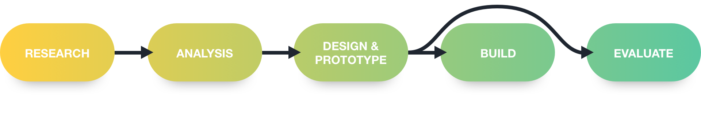

Travelcast
Holiday Destination Weather Forecaster
Weather apps are an oversaturated market, so many solutions and variation of tools. When asked as part of my studies to make one
I thought that rather than improving an existing use case discover a user with distinct needs and create a custom app that fits their need
specifically.
Travelcast does precisely that, travellers all around the world are always making weather-based decisions, but current solutions lead to a
very complicated process using more than one service at any one time. Travelcast puts all of these required features under one app
and streamlines the users' flow.
Team
Mark Brown
Danielle Covarrubias
Garret Palm
Michael Lau
Raluca Semenescu
Role
User Research, Interviews, Ideation, Research Triangulation/Convergence, IA, Wireframes, Testing, Working Prototype, Development.
Design Process
User Interviews & Contextual Study
Brainstorming which types of people use weather apps for specific reasons informed our decisions on whom to interview. As we were a large group, we were able to talk to 7 travellers and observe a few of them performing tasks. Some interesting results were:

Journey Map & Specification
Collecting this information and turning it into a journey map allowed us to identify areas for improvement and pain points. Combining this with interview data allowed us to map out our requirements.

Design
The design process did not include user testing as usual due to the projects time constraints. Instead, we reviewed and critiqued them amongst the team. While not as effective as testing, it was a preferred solution than nothing.
High Fidelity Design
We tested our first prototype with users to gain valuable feedback early on which revealed some pain points and frustrations. We continued this process throughout each part of the design phase. Some common observations were:
Development
Using React introduced a learning curve as no one in the team was familiar with it, however, with the time we had (2 weeks) we were pleased with the result. We were disappointed that the final product did not match the design as we'd expected but is something that would have been accomplished with a few more days.
Evaluation
Once the projects design was complete we conducted a heuristic evaluation which led to the bellow proposed improvements. We ran this alongside the development, this allowed minute changes to be made during the build. An empricle evualtion method is prefered over team heurisitics. However, with little resources and time a heuristic evaluation was sufficent enough. Empericle evaluations were also outside the scope of the project brief.
The Takeaway
As with many of my academic projects, Developing the product is a critical part. I pride myself on my ability to balance both ensuring the product is valuable and feasible to implement with my skill set. I’m also starting to see which research methods produce the most exciting results. This reflection helps other projects going forward.